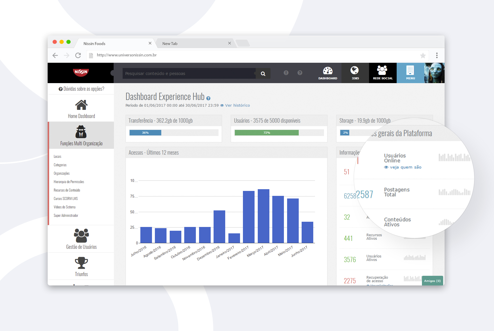

Hello! I'm Eloise Monteiro, a UI Designer, Graphic Designer, Mobile Designer and passionate for
Games from Brazil based in Lisboa/PT
working in Tech crafting accessible interactions & experiences for users.


Manufactory'
System
Furukawa Electric
Furukawa Electric's test management project in which users with a management profile can create and edit
the final test parameters of the products and users with an operator profile can perform the tests by
checking the standards created in the system.
Fully responsive design respecting the brand's visual identity but bringing a more modern look.
Development in Angular 8, HTML 5, SCSS and Boostrap framework.
Development in Angular 8, HTML 5, SCSS and Boostrap framework.
Automation
System
Industry Connect
Software developed for Furukawa Electric Factory automation.
Graphic development focused on usability of touch screen monitors with resolutions of 1024x768 while
operators handle with gloves and appropriate personal protective equipment.
Developed in Angular 6, SCSS, Boostrap.
Developed in Angular 6, SCSS, Boostrap.


App
iOS/Android
Mondelēz International
Benefit management project for Mondelēz International employees.
Management of operating areas within the company and distribution of rewards.
Developed in Ionic2, HTML, SCSS.
Dashboard
Nissin Foods
Employee points management system developed for the company Nissin Foods.
Focused on mobile first, fully responsive, Foundation framework, jQuery, HTML 5, CSS.
Always respecting the brand identity but bringing a more playful color guide.


Institucional
Website
GaiaNet
Creation of the institutional site in Wordpress for the technology company GaiaNet.
Respecting the brand identity, highlighting the company's portfolio.
Institucional
Website
CITS
Modern proposal for the Institutional Website of CITS - Centro
Internacional de Tecnologia de Software.
Development focused on the end user without technical knowledge for publishing content, using CMS.
Project in PHP, HTML and CSS.
Project in PHP, HTML and CSS.